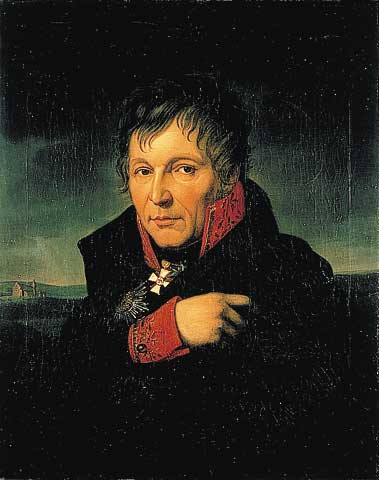
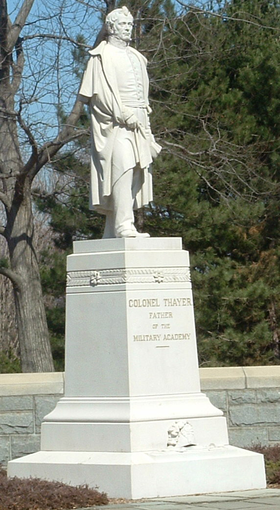

|
In the decades immediately preceding the Civil War, warfare
became much more complex. Quite suddenly it became possible
to convey armies rapidly to battlefields, to have them
arrive less fatigued and better able to commence operations
immediately, and to communicate with them easily,
efficiently, and quickly. Very large forces, now with more
lethal weaponry, could be maintained and kept concentrated
for long periods of time, because they could be supplied
rather than have to rely on foraging. The need for
management, of a higher order, forced its way into the
military equation; in response, a new form of revitalized
military professionalism emerged. This professionalism
evolved slowly, sometimes haltingly. It took new directions
usually only after painful lessons were learned by
experience.
Three factors further contributed to the development of
military professionalism. These were the growth of the
nation-state, the rise of democratic ideals and parties, and
the existence of a single recognized source of legitimate
authority over the nation-state's military forces. Putting
emphasis on and rewarding good performances within the
officer corps, in the countries where it came-and, to be
sure, this occurred in various countries at vastly different
moments in time-made it possible for individual merit,
rather than social or political position, to be the prime
prerequisite for commissioning and for promotion.
The emergence of a newer form of modern military
professionalism is among the most significant institutional
creations of the nineteenth century. The development came
forth with the evolution of five key constituent elements
within the military vocation: prerequisites for becoming an
officer, advancement in rank, the nature of the military
educational system, the military staff system, and esprit
and competence within the officer corps.
The Prussian Example
Perhaps the first prominent manifestation of evolving
modern military professionalism occurred in Prussia. A
disaster in 1806, cataclysmic and thoroughly jolting,
rendered the Prussians suddenly willing to experiment with
military reform. Napoleon's well-led combat veterans scored
twin victories on October 14,1806, in the Battles of Jena
and Auerstadt, and the main Prussian army disintegrated. In
response, there followed a period from 1806 to 1812 of
significant Prussian military reforms.
The conduct of all the higher officers during the recent
war was scrutinized; some eight hundred of them were
disciplined, many were dismissed, and others were demoted.
|

Gerhard Johann von Scharnhorst
|
Universal responsibility for military service became the
norm. Cadet schools were established. Harsh corporal and
other demeaning punishments were ameliorated; thenceforth
troops were to be disciplined by education and persuasion.
Class preference was abolished, education declared
essential, and merit proclaimed to be the main measurement
of worth for retention or promotion.
Chief of Staff Gerhard Johann von Scharnhorst, assisted
by August Wilhelm von Gueisenau, undertook reorganization of
the army. Their institutions and ideals dominated in Prussia
for the rest of the century, and their achievements
furnished the model upon which all other officer corps of
modern Western nations ultimately would be patterned.
Insisting that ongoing education, not just at the entry
level, be required, in 1810 Scharnhorst established the
Kriegsakademie in Berlin, the world's first military
university dedicated to the higher study of warfare.
The most revolutionary aspect of the Prussian system was
its denigration of genius as an essential attribute: average
men could become capable officers through superior
education, organization, and experience. Most conspicuously
visible, however, was the overhaul of the general staff. The
new general staff of the army would have four sections. One
was for strategy and tactics, one was for matters of
internal administration, one was for reinforcements, and one
was for artillery and munitions.
The culmination of the Prussian reforms soon became
manifest in a dramatic reversal of Prussia's previous
humiliation by France. In 1812 Napoleon invaded Russia. The
Prussians joined the Russians in 1813, and soon the
Austrians also commenced a war against France. Prussia
managed to send 80,000 men into the field-some 6 percent of
its total population. To support so ambitious a mobilization
would have been impossible without the prior managerial
achievements of the reformers. The most notable feature of
the ensuing campaign was excellence in staff work. The
resulting conclusion came on October 6,1813, with Napoleon's
spectacular defeat at Leipzig.
During the aftermath of the Napoleonic Wars, most Western
nations established military schools and, at least to some
extent, democratized their officer corps. Another Prussian,
Karl von Clausewitz-in his lectures at the Kriegsakademie
and in his posthumous 1833 publication of the three-volume
book On War-provided the theoretical rationale for
the new profession. Clausewitz was unique in his grasp and
articulation of the essence of how warfare had been
transformed.
Not until much later in the century, however, would the
English-speaking peoples appreciate the Prussian
achievement, for On War was not translated into
English until 1873. The Americans long continued to look to
France for military example. Thus, Antoine Henri, Baron de
Jomini, and not Clausewitz, became the principal interpreter
of Napoleonic strategy to Americans.
Military education continued to grow in significance. The
French founded the Ecole Polytechnique in 1794. The British
established the Royal Military College in 1799. In 1802 the
United States founded the U.S. Military Academy at West
Point. Even more important was the later implementation of
institutions for advanced study of warfare.
The U. S. Military Academy
A few Americans early in the nineteenth century inclined
toward military professionalism, most notably Alexander
Hamilton and John C. Calhoun, whose ideas were implemented
only in minor part. West Point, for example, as established
at its outset, was only one-fifth of the military university
that Hamilton had envisioned; he had hoped that it would
also include a matrix of postgraduate and professional
schools to which officers would return for more advanced
studies at various intervals in their careers. Later, when
Calhoun tried to restructure the military along Hamiltonian
lines, he was stymied. Calhoun did, however, establish the
U.S. General Staff-not a true general staff on the Prussian
model but at least a rudimentary beginning of bureau
management, staff planning, and facilitation in logistics.
The poor performance of the army in the War of 1812
demonstrated the need for further reforms in the military,
and in 1815-for the first time he separated the positions of
chief of engineers and superintendent of the Academy, thus
making it possible for the superintendent to truly and fully
concentrate on his tasks at the Academy. Thirty-year-old
Capt. Alden Partridge became the first superintendent.
During his tenure, from 1815 to 1817, Partridge effected
some crucial improvements. He imposed discipline and order.
Believing that music would improve drill and raise morale,
he induced the War Department to station a band at West
Point. He was keenly interested in the history of past
campaigns, and he captivated cadets with his stories. He
designed the "Cadet Gray" uniforms, the color still worn
today. Partridge also established the first set of specific
requirements for graduation.
On July 17,1817, President James Monroe named a new
superintendent, Bvt. Maj. Sylvanus Thayer. The greatest
changes of all at the Academy were to come under Thayer's
|

The statue of Sylvanus Thayer at West Point
honors him as the "Father of the Military Academy."
|
direction, and during his sixteen-year tenure as
superintendent, from 1817 to 1833, he earned the title
"Father of West Point." Thayer had been fascinated with
things military since his childhood, and he practically
worshiped Napoleon. In 1807 Thayer graduated with highest
honors from Dartmouth and then matriculated at West Point,
where in one year he qualified for graduation and a
commission. He performed well in field assignments during
the War of 1812. In 1815 the government dispatched him to
Europe, where he spent nearly a year in study and in
purchasing European books on the art of war for the Academy.
Early in 1816 he was given the opportunity to observe the
operation of France's Ecole Polytechnique for several
months.
Singularly dedicated to the soldierly life, so serious
that many people thought him humorless, always neat and
orderly in his person, Thayer's unfailing punctuality became
legendary. He came to know every cadet personally. He worked
sensitively with his faculty, probed deeply about all that
they did, and sought their suggestions for improvements.
Thayer prescribed stringent changes. In short order he
dismissed hopelessly deficient cadets. He forbade cadets to
leave the post without his permission, as theretofore they
had done freely. He forbade them to bring or receive any
money from home so that all had to live on the same amount,
the standard government pay scale for cadets. He instituted
a summer training encampment, organized the corps structure
and created the cadet ranks, carefully laid out the
prescribed four-year curriculum, and established the system
of merit and demerit rating. The hallmark of the Thayer
academic system became thoroughly practical instruction, in
small classes, with every cadet being required to recite
every day. Thayer created the position of commandant of
cadets, the officer in charge of tactical training and
discipline. Soon Thayer added assistants to the commandant,
junior officers who lived in the cadet barracks to provide
continual close supervision.
West Point became the nation's foremost engineering
school, indeed its only one of any note, until the
introduction of engineering at Rensselaer Polytechnic
Institute in 1828. Graduates made tremendous and varied
contributions in supervising all manner of engineering
projects, including canals, railroads, public buildings, and
elaborate seacoast fortifications. In fact, engineering was
such a prominent part of the curriculum that military
subjects were only taught as an afterthought. That would all
change, however, as the result of three wars fought between
1835 and 1855.
Source: Herman Hattaway, Shades of Blue and Gray: An Introductory Military
History of the Civil War (Columbia: University of Missouri Press, 1997), 1-28.
|